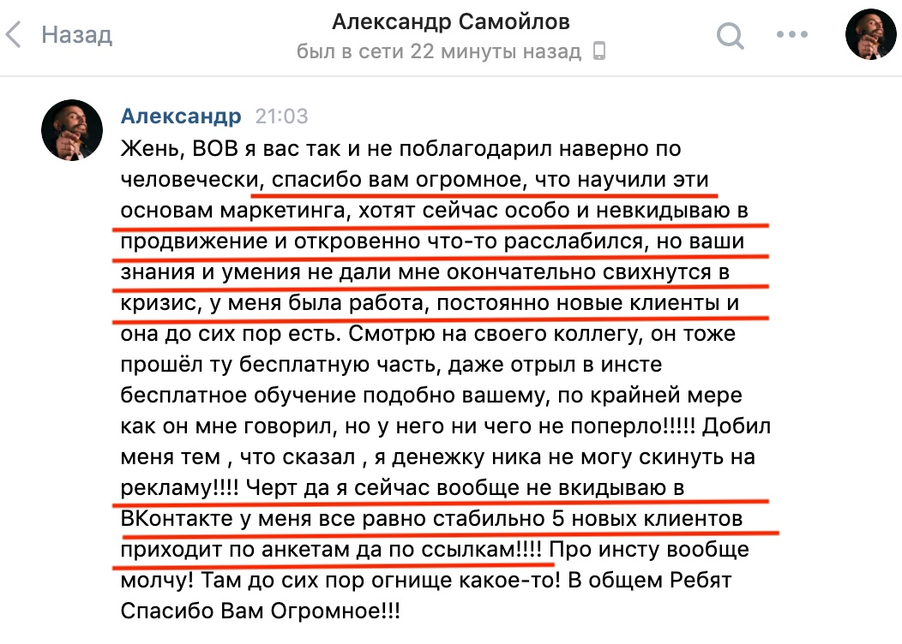

Александр Самойлов. Тату-мастер из Новокузнецка — после курса увеличил свой доход в 2 раза. За последний год стал популярным и востребованным мастером в своем городе. Открыли Саше страсть к обучению. Теперь он постоянно совершенствуется и растет профессионально.
